Woodworking machines 8 items · 8 pcs / set

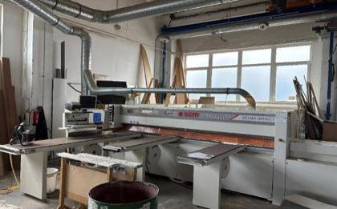
Product photoTap to zoomPanel saw (beam saw)
SCM Sigma Impact – pila
Est. weight ≈ 2.5–4.0 t
1 pcs / setRef #1

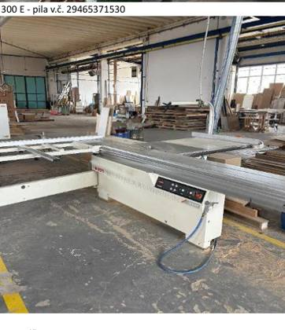
Product photoTap to zoomSliding table saw
SCM SI 300 E – pila, v.č. 29465371530
Est. weight ≈ 0.6–1.0 t
1 pcs / setRef #2

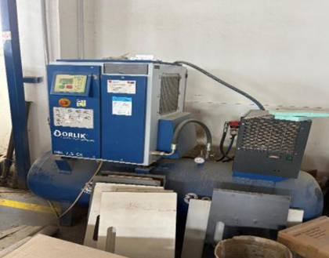
Product photo2 photos · tap to zoomAir compressor
Kompresor Orlík ORL 7,5 CX
Now stored in a trailer, ready for loading (see photos).
Est. weight ≈ 0.2–0.4 t
1 pcs / setRef #3

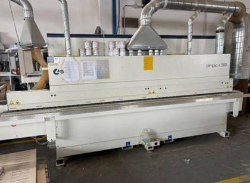
Product photo2 photos · tap to zoomEdge banding machine
Olimpic K 560 – olepovačka hran
Now stored in a trailer, ready for loading (see photos).
Est. weight ≈ 0.8–1.3 t
1 pcs / setRef #4

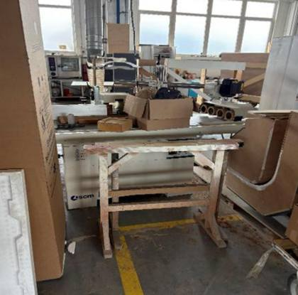
Product photo2 photos · tap to zoomSpindle moulder
SCM Nova TI 105 – fréza, v.č. KK00038493
Now stored in a trailer, ready for loading (see photos).
Est. weight ≈ 0.4–0.8 t
1 pcs / setRef #7

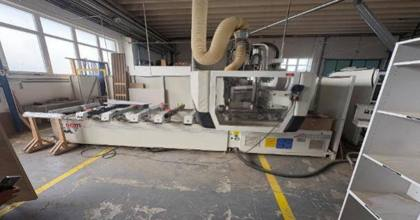
Product photoTap to zoomCNC machining centre
SCM Tech Z2 – CNC, 29911055950
Est. weight ≈ 3.0–5.0 t
1 pcs / setRef #8

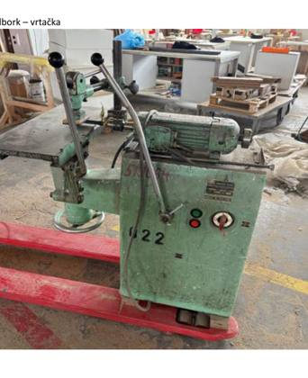
Product photoTap to zoomDrilling machine
Pemal Malbork – vrtačka
Est. weight ≈ 0.2–0.5 t
1 pcs / setRef #9

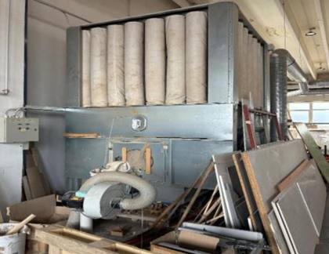
Product photo4 photos · tap to zoomDust extractor
Elektroprof – odsávačka pilin, v.č. 1179
Incl. spiral ducting of the extraction system.
Est. weight ≈ 0.2–0.5 t
1 pcs / setRef #23
Board material & hardware 5 items · 5 pcs / set

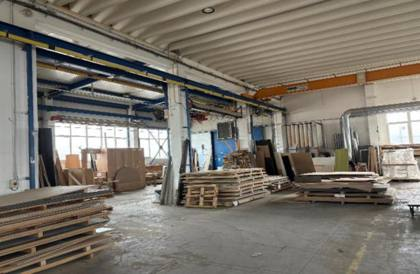
Product photo2 photos · tap to zoomBoard material (OSB / chipboard)
Soubor materiálu – OSB a dřevotřískové desky
Now stored in a trailer, ready for loading (see photos).
Est. weight ≈ 2.0–8.0 t
1 pcs / setRef #10

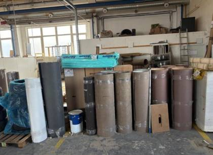
Product photoTap to zoomVeneer
Soubor materiálu – dýhy
Est. weight ≈ 0.5–2.0 t
1 pcs / setRef #11

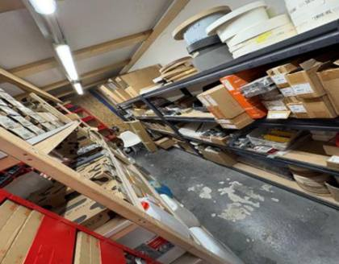
Product photo8 photos · tap to zoomFasteners, fittings & glue stock
Příruční sklad – spojovací materiál, lepení, kování
Several pallets: hardware and fittings in bins, edge-banding rolls, boxed accessories, cables, plus shelving racks — 8 photos.
Est. weight ≈ 0.2–0.6 t
1 pcs / setRef #15

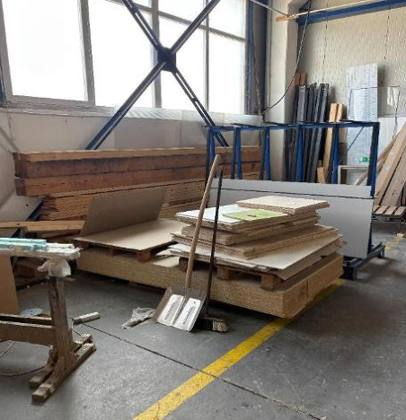
Product photo3 photos · tap to zoomBoard material & beams
OSB desky, trámy + ostatní materiál
Board offcuts, beams and mixed timber, partly loaded in a trailer.
Est. weight ≈ 1.0–4.0 t
1 pcs / setRef #22

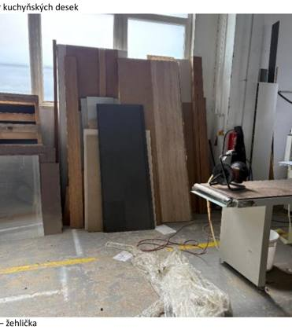
Product photoTap to zoomKitchen worktops
Soubor kuchyňských desek
Est. weight ≈ 0.5–2.0 t
1 pcs / setRef #24
Power & hand tools 3 items · 3 pcs / set

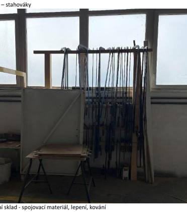
Product photo2 photos · tap to zoomClamps
Nářadí – stahováky
Wall rack full of bar and screw clamps.
Est. weight ≈ 0.1–0.3 t
1 pcs / setRef #14

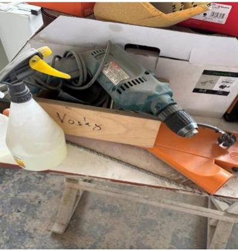
Product photoTap to zoomImpact drill
Makita HP1621 – vrtačka
Est. weight ≈ 0.0 t
1 pcs / setRef #18

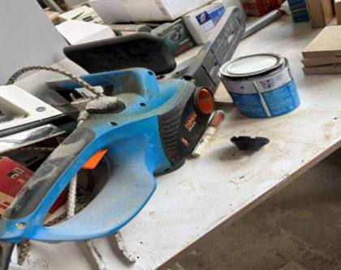
Product photoTap to zoomCircular saw
Narex EPR 40-20 – pila
Est. weight ≈ 0.0 t
1 pcs / setRef #19
Workshop equipment & heating 7 items · 23 pcs / set

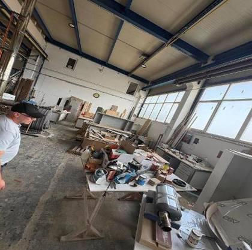
Product photoTap to zoomWorkbench
Pracovní stoly 6 ks
Est. weight ≈ 0.3–0.6 t
6 pcs / setRef #17

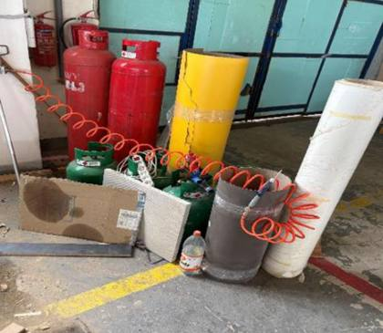
Product photoTap to zoomGas cylinders
Plynové nádoby 6 ks
Est. weight ≈ 0.1–0.2 t
6 pcs / setRef #33

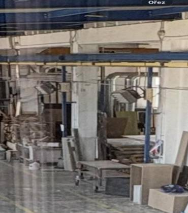
Product photoTap to zoomAir heater unit (Flowair)
Flowair ke kamnům 5x
Est. weight ≈ 0.1–0.2 t
5 pcs / setRef #21

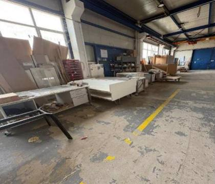
Product photoTap to zoomWorkbench
Pracovní stoly 3x
Est. weight ≈ 0.1–0.3 t
3 pcs / setRef #20

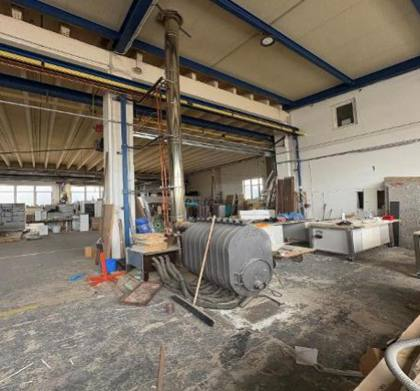
Product photoTap to zoomWorkshop heater with accessories
Kamna Heater s příslušenstvím
Est. weight ≈ 0.2–0.5 t
1 pcs / setRef #16

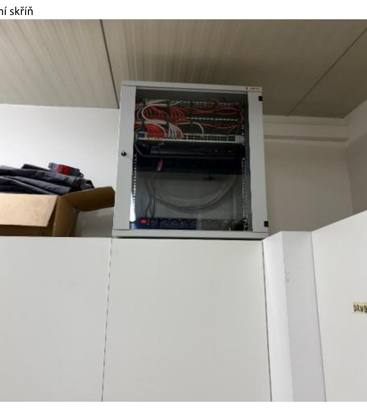
Product photoTap to zoomElectrical distribution cabinet
Rozvodní skříň
Est. weight ≈ 0.1–0.2 t
1 pcs / setRef #32

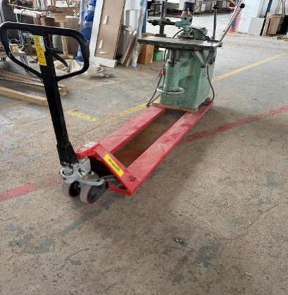
Product photoTap to zoomPallet truck
Paletový vozík
Est. weight ≈ 0.1 t
1 pcs / setRef #34
Office, kitchen & staff room 9 items · 9 pcs / set

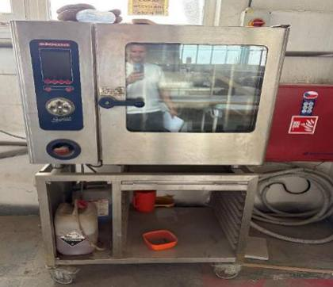
Product photoTap to zoomCombi steamer oven
Konvektomat Eloma Genius
Est. weight ≈ 0.1–0.2 t
1 pcs / setRef #5

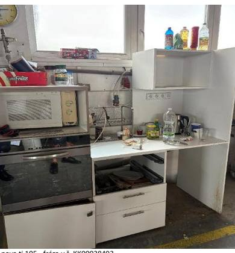
Product photoTap to zoomKitchen equipment
Kuchyň
Est. weight ≈ 0.1–0.3 t
1 pcs / setRef #6

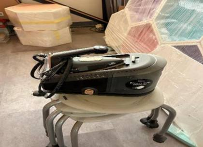
Product photoTap to zoomIron
Braun – žehlička
Est. weight ≈ 0.0 t
1 pcs / setRef #25

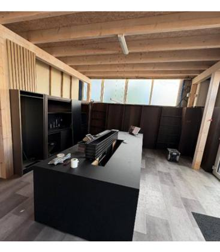
Product photo3 photos · tap to zoomBuilt-in kitchen & furniture
Soubor nábytku – vestavěná kuchyň + nábytek
Black kitchen and furniture units (showroom).
Est. weight ≈ 0.3–0.8 t
1 pcs / setRef #26

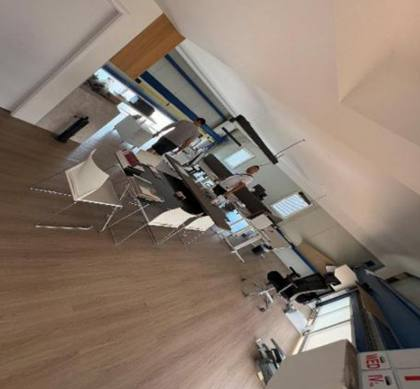
Product photo2 photos · tap to zoomOffice furniture
Soubor kancelářského nábytku (židle, stoly)
Est. weight ≈ 0.2–0.6 t
1 pcs / setRef #27

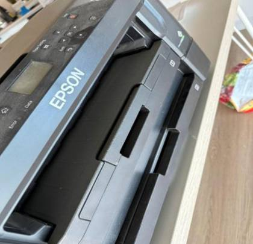
Product photoTap to zoomPrinter
Epson – tiskárna
Est. weight ≈ 0.0 t
1 pcs / setRef #28

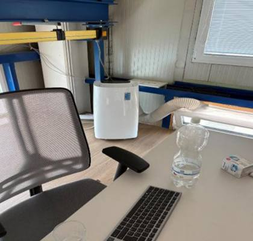
Product photoTap to zoomMobile air conditioner
Mobilní klimatizace Sencor
Est. weight ≈ 0.0 t
1 pcs / setRef #29

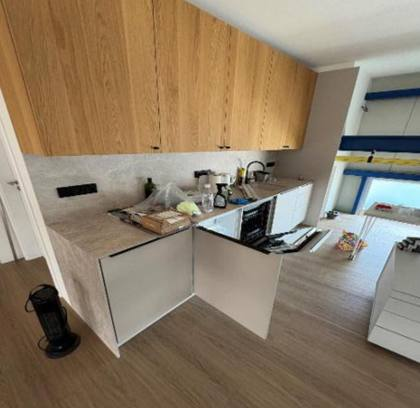
Product photoTap to zoomKitchen unit with fridge & dishwasher
Kuchyňská linka vč. lednice a myčky
Est. weight ≈ 0.2–0.4 t
1 pcs / setRef #30

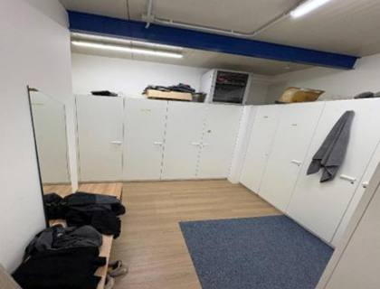
Product photo2 photos · tap to zoomWardrobe lockers
Šatní skříně
Est. weight ≈ 0.1–0.3 t
1 pcs / setRef #31
Vehicles 2 items · 2 pcs / set

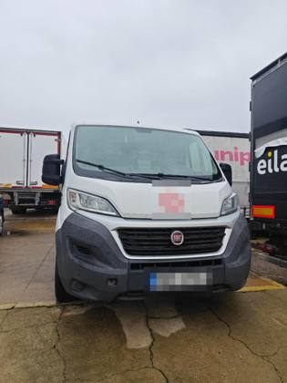
Product photo2 photos · tap to zoomPanel van
Fiat Ducato
Fiat Ducato panel van, standard roof, white, Czech registration. Year and mileage on request.
Est. weight ≈ 2.0–2.5 t
1 pcs / setRef #36

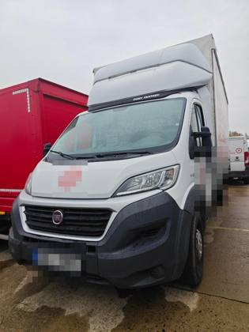
Product photo2 photos · tap to zoomBox van (curtain-side)
Fiat Ducato Maxi – skříňová nástavba
Fiat Ducato Maxi with curtain-side box body (tarpaulin sides, roof deflector), white, Czech registration. Year and mileage on request.
Est. weight ≈ 2.3–3.0 t
1 pcs / setRef #37
Other items 3 items · 27 pcs / set

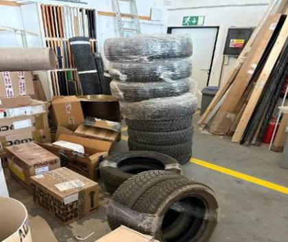
Product photoTap to zoomTyres
Pneu 22 ks
Est. weight ≈ 0.2–0.3 t
22 pcs / setRef #13

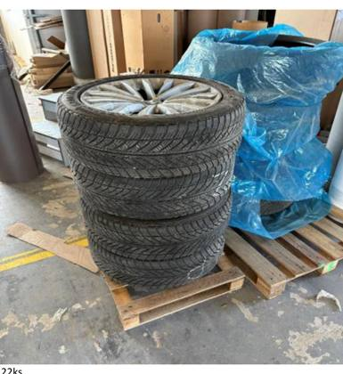
Product photoTap to zoomWheels with tyres
BMW disky + pneu 4 ks
Est. weight ≈ 0.1 t
4 pcs / setRef #12

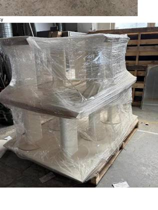
Product photo2 photos · tap to zoomFinished products (furniture)
Hotové výrobky
Wrapped furniture on pallets.
Est. weight ≈ 0.3–1.5 t
1 pcs / setRef #35
Summary of contents
By product type
| Product type | Items | Quantity (pcs / set) | Share | Est. weight |
|---|---|---|---|---|
| Tyres | 1 | 22 | 28.6% | ≈ 0.2–0.3 t |
| Workbench | 2 | 9 | 11.7% | ≈ 0.4–0.9 t |
| Gas cylinders | 1 | 6 | 7.8% | ≈ 0.1–0.2 t |
| Air heater unit (Flowair) | 1 | 5 | 6.5% | ≈ 0.1–0.2 t |
| Wheels with tyres | 1 | 4 | 5.2% | ≈ 0.1 t |
| Panel saw (beam saw) | 1 | 1 | 1.3% | ≈ 2.5–4.0 t |
| Sliding table saw | 1 | 1 | 1.3% | ≈ 0.6–1.0 t |
| Air compressor | 1 | 1 | 1.3% | ≈ 0.2–0.4 t |
| Edge banding machine | 1 | 1 | 1.3% | ≈ 0.8–1.3 t |
| Combi steamer oven | 1 | 1 | 1.3% | ≈ 0.1–0.2 t |
| Kitchen equipment | 1 | 1 | 1.3% | ≈ 0.1–0.3 t |
| Spindle moulder | 1 | 1 | 1.3% | ≈ 0.4–0.8 t |
| CNC machining centre | 1 | 1 | 1.3% | ≈ 3.0–5.0 t |
| Drilling machine | 1 | 1 | 1.3% | ≈ 0.2–0.5 t |
| Board material (OSB / chipboard) | 1 | 1 | 1.3% | ≈ 2.0–8.0 t |
| Veneer | 1 | 1 | 1.3% | ≈ 0.5–2.0 t |
| Clamps | 1 | 1 | 1.3% | ≈ 0.1–0.3 t |
| Fasteners, fittings & glue stock | 1 | 1 | 1.3% | ≈ 0.2–0.6 t |
| Workshop heater with accessories | 1 | 1 | 1.3% | ≈ 0.2–0.5 t |
| Impact drill | 1 | 1 | 1.3% | ≈ 0.0 t |
| Circular saw | 1 | 1 | 1.3% | ≈ 0.0 t |
| Board material & beams | 1 | 1 | 1.3% | ≈ 1.0–4.0 t |
| Dust extractor | 1 | 1 | 1.3% | ≈ 0.2–0.5 t |
| Kitchen worktops | 1 | 1 | 1.3% | ≈ 0.5–2.0 t |
| Iron | 1 | 1 | 1.3% | ≈ 0.0 t |
| Built-in kitchen & furniture | 1 | 1 | 1.3% | ≈ 0.3–0.8 t |
| Office furniture | 1 | 1 | 1.3% | ≈ 0.2–0.6 t |
| Printer | 1 | 1 | 1.3% | ≈ 0.0 t |
| Mobile air conditioner | 1 | 1 | 1.3% | ≈ 0.0 t |
| Kitchen unit with fridge & dishwasher | 1 | 1 | 1.3% | ≈ 0.2–0.4 t |
| Wardrobe lockers | 1 | 1 | 1.3% | ≈ 0.1–0.3 t |
| Electrical distribution cabinet | 1 | 1 | 1.3% | ≈ 0.1–0.2 t |
| Pallet truck | 1 | 1 | 1.3% | ≈ 0.1 t |
| Finished products (furniture) | 1 | 1 | 1.3% | ≈ 0.3–1.5 t |
| Panel van | 1 | 1 | 1.3% | ≈ 2.0–2.5 t |
| Box van (curtain-side) | 1 | 1 | 1.3% | ≈ 2.3–3.0 t |
| Total | 37 | 77 | 100% | ≈ 19–43 t |
By group
| Group | Items | Quantity (pcs / set) | Share | Est. weight |
|---|---|---|---|---|
| Woodworking machines | 8 | 8 | 10.4% | ≈ 8–14 t |
| Board material & hardware | 5 | 5 | 6.5% | ≈ 4–17 t |
| Power & hand tools | 3 | 3 | 3.9% | ≈ 0.1–0.3 t |
| Workshop equipment & heating | 7 | 23 | 29.9% | ≈ 1.0–2.1 t |
| Office, kitchen & staff room | 9 | 9 | 11.7% | ≈ 1.0–2.7 t |
| Vehicles | 2 | 2 | 2.6% | ≈ 4.3–5.5 t |
| Other items | 3 | 27 | 35.1% | ≈ 0.6–1.9 t |
| Total | 37 | 77 | 100% | ≈ 19–43 t |
Shipping estimate
| Total volume (approx.) | ≈ 60–110 m³ |
| Total weight (approx.) | ≈ 12–30 t |
| 40′ High Cube containers | 1–2 |
| 20′ Standard containers | 3–4 |
Estimate from the inventory photos (volume and weight are ranges; board stock dominates the weight). The panel saw and the CNC centre need forklift or crane loading. The two vans are driven, not containerised, and are not counted here. Final figures after the packing list.
Container capacity used: 40′ HC ≈ 68 m³ / 26.5 t, 20′ ≈ 28 m³ / 24 t (practical loading).
Container capacity used: 40′ HC ≈ 68 m³ / 26.5 t, 20′ ≈ 28 m³ / 24 t (practical loading).